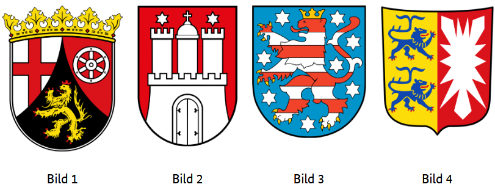
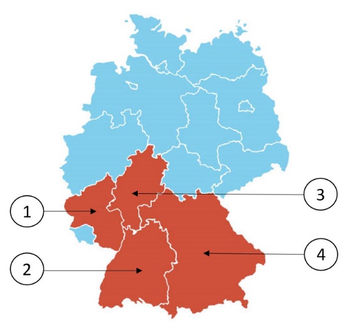

Sprache auswählen: Bitte wählen Sie Ihre Sprache über das Zahnrad-Symbol (⚙️) oben rechts auf der Seite aus.
401. Welches Wappen gehört zum Bundesland Rheinland-Pfalz?Який герб належить федеральній землі Рейнланд-Пфальц?Which coat of arms belongs to the federal state of Rhineland-Palatinate?أي شعار ينتمي إلى ولاية راينلاند-بفالتس؟Aşağıdaki armalardan hangisi Rheinland-Pfalz eyaletine aittir?Кой герб принадлежи на провинция Райнланд-Пфалц?کدام نشان متعلق به ایالت راینلند-فالتس است؟Koji grb pripada saveznoj zemlji Rheinland-Pfalz?Кој грб припаѓа на покраината Рајнланд-Пфалц?Który herb należy do kraju związkowego Nadrenia-Palatynat?Care stemă aparține landului Renania-Palatinat?Quale stemma appartiene alla Renania-Palatinato?निम्न में से कौन सा प्रतीक चिन्ह राइनलैंड-पलाटिनेट राज्य का है?

402. Welches ist ein Landkreis in Rheinland-Pfalz?Який з наведених є районом у Рейнланд-Пфальці?Which of the following is a district in Rhineland-Palatinate?أي من التالي هو مقاطعة في راينلاند-بفالتس؟Aşağıdakilerden hangisi Rheinland-Pfalz'da bir ilçedir?Кой от следните е окръг в Райнланд-Пфалц?کدام یک از موارد زیر منطقهای در راینلند-فالتس است؟Koji od navedenih je okrug u Rheinland-Pfalzu?Кој од следниве е округ во Рајнланд-Пфалц?Który z poniższych to powiat w Nadrenii-Palatynacie?Care dintre următoarele este un district în Renania-Palatinat?Quale delle seguenti è una contea nella Renania-Palatinato?निम्न में से कौन राइनलैंड-पलाटिनेट में एक ज़िला है?
403. Für wie viele Jahre wird der Landtag in Rheinland-Pfalz gewählt?На скільки років обирається ландтаг у Рейнланд-Пфальці?For how many years is the state parliament in Rhineland-Palatinate elected?لمدة كم سنة يُنتخب برلمان ولاية راينلاند-بفالتس؟Rheinland-Pfalz eyalet parlamentosu kaç yıllığına seçilir?За колко години се избира парламентът в Райнланд-Пфалц?پارلمان ایالتی راینلند-فالتس برای چند سال انتخاب میشود؟Na koliko godina se bira parlament u Rheinland-Pfalzu?На колку години се избира парламентот во Рајнланд-Пфалц?Na ile lat wybierany jest parlament w Nadrenii-Palatynacie?Pe câți ani este ales parlamentul în Renania-Palatinat?Per quanti anni viene eletto il parlamento in Renania-Palatinato?राइनलैंड-पलाटिनेट में राज्य संसद कितने वर्षों के लिए चुनी जाती है?
404. Ab welchem Alter darf man in Rheinland-Pfalz bei Kommunalwahlen wählen?З якого віку можна голосувати на комунальних виборах у Рейнланд-Пфальці?From what age can one vote in local elections in Rhineland-Palatinate?من أي عمر يُسمح بالتصويت في الانتخابات المحلية في راينلاند-بفالتس؟Rheinland-Pfalz'da yerel seçimlerde oy kullanma yaşı kaçtır?От каква възраст може да се гласува на местни избори в Райнланд-Пфалц?از چه سنی میتوان در انتخابات محلی راینلند-فالتس رأی داد؟Od koje godine se može glasati na lokalnim izborima u Rheinland-Pfalzu?Од која возраст може да се гласа на локалните избори во Рајнланд-Пфалц?Od jakiego wieku można głosować w wyborach lokalnych w Nadrenii-Palatynacie?De la ce vârstă se poate vota la alegerile locale în Renania-Palatinat?Da quale età si può votare alle elezioni comunali in Renania-Palatinato?राइनलैंड-पलाटिनेट में स्थानीय चुनावों में वोट देने की न्यूनतम आयु क्या है?
405. Welche Farben hat die Landesflagge von Rheinland-Pfalz?Які кольори має прапор федеральної землі Рейнланд-Пфальц?What are the colors of the state flag of Rhineland-Palatinate?ما هي ألوان علم ولاية راينلاند-بفالتس؟Rheinland-Pfalz eyalet bayrağının renkleri nelerdir?Какви са цветовете на знамето на Райнланд-Пфалц?پرچم ایالت راینلند-فالتس چه رنگهایی دارد؟Koje boje ima zastava Rheinland-Pfalza?Кои бои ги има знамето на Рајнланд-Пфалц?Jakie kolory ma flaga Nadrenii-Palatynatu?Ce culori are steagul landului Renania-Palatinat?Quali sono i colori della bandiera della Renania-Palatinato?राइनलैंड-पलाटिनेट के राज्य ध्वज में कौन-कौन से रंग होते हैं?
406. Wo können Sie sich in Rheinland-Pfalz über politische Themen informieren?Де в Рейнланд-Пфальці можна дізнатися про політичні теми?Where can you get information about political topics in Rhineland-Palatinate?أين يمكنك الحصول على معلومات حول المواضيع السياسية في راينلاند-بفالتس؟Rheinland-Pfalz'da siyasi konular hakkında nereden bilgi alabilirsiniz?Къде в Райнланд-Пфалц можете да се информирате за политически теми?در راینلند-فالتس از کجا میتوان درباره موضوعات سیاسی اطلاعات کسب کرد؟Gdje se u Rheinland-Pfalzu možete informisati o političkim temama?Каде во Рајнланд-Пфалц можете да се информирате за политички теми?Gdzie w Nadrenii-Palatynacie można uzyskać informacje na tematy polityczne?Unde vă puteți informa despre subiecte politice în Renania-Palatinat?Dove puoi informarti su temi politici in Renania-Palatinato?राइनलैंड-पलाटिनेट में आप राजनीतिक विषयों की जानकारी कहाँ से प्राप्त कर सकते हैं?
407. Die Landeshauptstadt von Rheinland-Pfalz heißt …Столиця федеральної землі Рейнланд-Пфальц — …The capital of the federal state of Rhineland-Palatinate is …عاصمة ولاية راينلاند-بفالتس هي …Rheinland-Pfalz eyaletinin başkenti …Столицата на Райнланд-Пфалц е …پایتخت ایالت راینلند-فالتس … استGlavni grad savezne zemlje Rheinland-Pfalz je …Главниот град на покраината Рајнланд-Пфалц е …Stolicą Nadrenii-Palatynatu jest …Capitala landului Renania-Palatinat este …La capitale della Renania-Palatinato è …राइनलैंड-पलाटिनेट की राजधानी है …
408. Welches Bundesland ist Rheinland-Pfalz?Яка з федеральних земель — це Рейнланд-Пфальц?Which federal state is Rhineland-Palatinate?أي ولاية اتحادية هي راينلاند-بفالتس؟Hangi eyalet Rheinland-Pfalz'dır?Коя федерална провинция е Райнланд-Пфалц?کدام ایالت فدرال، راینلند-فالتس است؟Koja savezna pokrajina je Rheinland-Pfalz?Која покраина е Рајнланд-Пфалц?Który kraj związkowy to Nadrenia-Palatynat?Care land federal este Renania-Palatinat?Quale stato federale è la Renania-Palatinato?निम्न में से कौन सा संघीय राज्य राइनलैंड-पलाटिनेट है?

409. Wie nennt man die Regierungschefin/den Regierungschef in Rheinland-Pfalz?Як називається голова уряду в Рейнланд-Пфальці?What is the title of the head of government in Rhineland-Palatinate?ما هو لقب رئيسة / رئيس الحكومة في راينلاند-بفالتس؟Rheinland-Pfalz'daki hükümet başkanına ne denir?Как се нарича ръководителят на правителството в Райнланд-Пфалц?رئیس دولت در راینلند-فالتس چه نام دارد؟Kako se zove šef vlade u Rheinland-Pfalzu?Како се нарекува шефот на владата во Рајнланд-Пфалц?Jak nazywa się szef rządu w Nadrenii-Palatynacie?Cum se numește șeful guvernului din Renania-Palatinat?Come si chiama il capo del governo della Renania-Palatinato?राइनलैंड-पलाटिनेट में सरकार के प्रमुख को क्या कहा जाता है?
410. Welche Ministerin/welchen Minister hat Rheinland-Pfalz nicht?Якого міністра не має Рейнланд-Пфальц?Which minister does Rhineland-Palatinate not have?أي وزيرة / وزير لا يوجد في راينلاند-بفالتس؟Rheinland-Pfalz'da hangi bakanlık yoktur?Кой министър липсва в Райнланд-Пфалц?کدام وزیر در راینلند-فالتس وجود ندارد؟Kojeg ministra nema u Rheinland-Pfalzu?Кој министер го нема во Рајнланд-Пфалц?Którego ministra nie ma w Nadrenii-Palatynacie?Ce ministru nu există în Renania-Palatinat?Quale ministro non esiste nella Renania-Palatinato?राइनलैंड-पलाटिनेट में इनमें से कौन मंत्री नहीं होता?
Ende des Tests (Fragen für das Bundesland Rheinland-Pfalz, Teil II)
Quellen
Fragen 401, 408 / Infografik, Text zu den Fragen: BAMF – https://www.bamf.de/. Übersetzung / Rechts: KI-Technologie